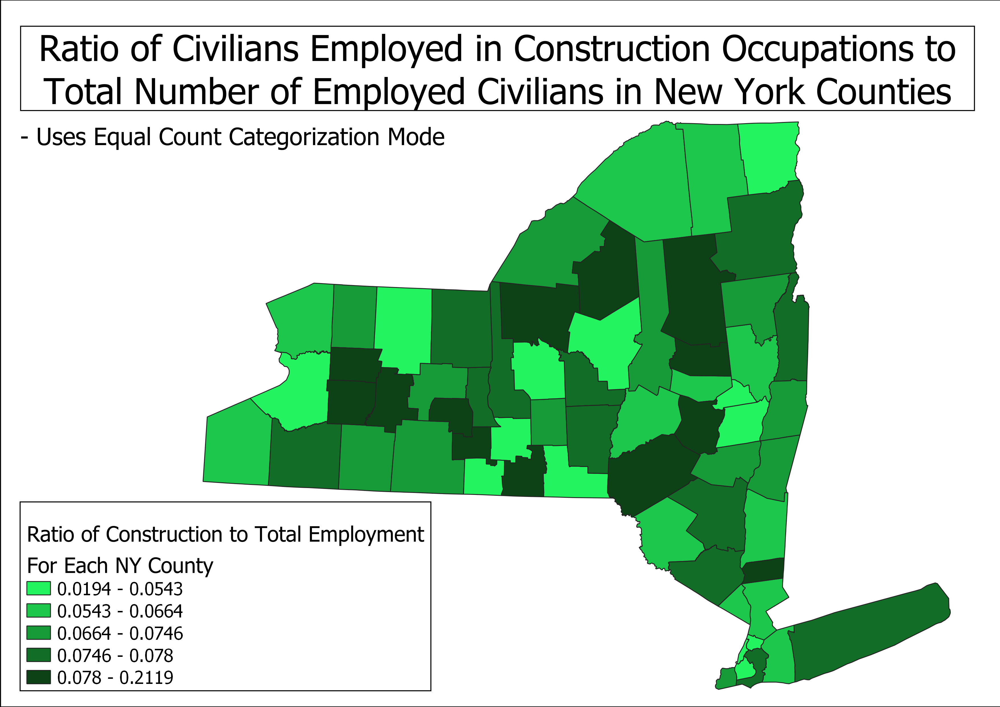
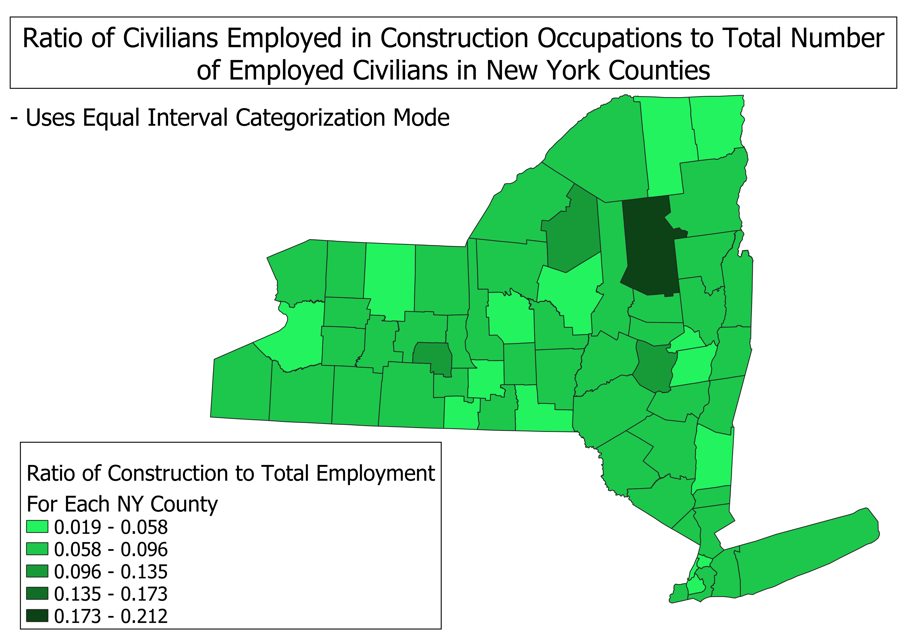
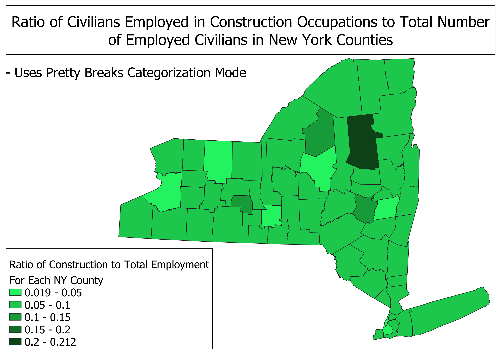

Homework 6.2: Census data ratios and categories
Jane Antonas
Describe ratio used and why. Each map utilizes a ratio of "New York civilians over the age of 16 years employed in construction occupations" to "total number of New York civilians over the age of 16 years that are employed." By comparing construction employees to total employees, the data is normalized for smaller or larger populations. Larger populations are probably going to have a larger raw count of construction employees. Using a ratio instead of a raw count make the proportion of construction employees to all employees more clear. Each map uses data from the US Census Bureau.
Data used for this project:
View Data from the US Census Bureau
Map 1
This map uses an equal count categorization mode, so each category contains the same number of counties. This map would be best for highlighting the median ratio of construction employees to total employment. By just looking at the middle range in the legend, you can see the median. This mode is not as efficient as the other modes at identifying "clusters" of data since all classes are presented equally.

Map 2:
This map uses an

Map 3: Breifly discuss pros and cons of this mode.
